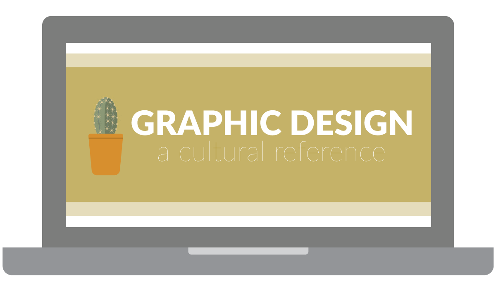
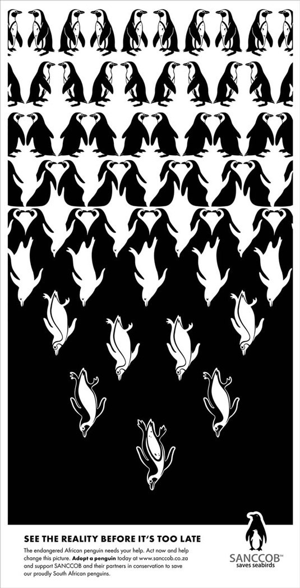

Graphic Design: A Cultural Reference to Our Society.
The most powerful graphics are those that speak most to our experiences, the collective narratives of our communities, and the opposition of what society has deemed the norm. But to appreciate Graphic Design pieces is to appreciate the cultural reference it points towards. Colors, typography, and composition don’t mean a thing without a cultural association. In this STS Graphic Design series, learn the deeper meaning of Graphic Design and its greater purpose of relaying complex messages in visual styles specific to its particular era.
In this course, learn the power layout and composition has on Graphic Design pieces, understand how negative spaces create new spaces and messages, and learn how equal distribution of visual weight is often key to make any Graphic Design piece pleasant and appealing to the eye. At the end of the lesson, complete an example project using Adobe Illustrator using the concepts you learned in class.
Graphic Design & Culture

What is Graphic Design?
In its simplest definition, Graphic Design is the combination of graphics, color, and fonts. BUT none of these are powerful until they promote a message relevant to a society, whether that be a group of people, an organization, or the entire world.
EXAMPLE 1: THE STOP SIGN
How do we identify a Stop Sign? How do we know to stop at one?
Through exposure, particular graphics become meaningful. A Stop Sign is found all throughout a city, and society has defined the combination of its different components to mean the following: Stop otherwise there is danger
But what if we were to come across a "Stop Sign" with an orange Curlz MT font instead of the white sans-serif font? Unless it eventually became the norm, we probably wouldn't take the sign so seriously, mostly because we were raised to expect certain features from Stop Signs.
EXAMPLE 2: BATMAN
In the United States, Batman is a well known figure for many people. Whether you grew up with the original comic books, played with Batman action figures, or have merely heard of the films, Batman surely can't be missed or mistaken. Below, you will find three representations of Batman. Notice how they are all different in their own way, yet through consistant colors and shapes, the Batman brand can be recalled. But are colors, shapes, and (sometimes) text really the only way to identify Batman? NO. Rather, the way we can identify such colors, shapes, and text to be associated with Batman is through constant exposure of the character and brand.
Exposure to Culture Grants Us Access To Create.
Even though art does not come naturally to everyone, everyone is still capable of understanding popular cultural references and replicating the techniques used to send a message. Our constant surrounding of graphic design work give us examples of what a project nowadays should look like and contain.
This definition of culture deals with the production of messages and understanding through exposure of particular everyday visuals and styles. This should not, however, be an excuse to steal and profit off cultural realities by marginalized communities, or celebrate stereotypes. Do appreciate, don’t appropriate.
FUN-damentals: Lines, Shapes, and Forms
Watch this Awesome Fundamentals of Design Video
Line
Lines are the connection of any two points which can be straight, jagged, or curvy. In Graphic Design, lines can organize content, make illustrations, or add detail to any work.
Shape
A shape is an enclosed outline of an object composed of intersecting ends of lines. Shapes can be either geometric or organic. In Graphic Design, shapes can help organize content, make illustrations, or add detail to any work.
Geometric/Regular Shape
Geometric shapes, are mathematically calculated to have perfect measurement ratios throughout its enclosure (ex. square, circle, triangle, rectangle, octagon, etc.)
Geometric shapes can be used to create simplistic and visually-pleasing versions of any person, place, or thing.
Organic Shape
Organic shapes are non-perfect and free-form.
Organic shapes can always be broken down into several overlapping geometric shapes.
Form
Forms are the three-dimensional version of any given shape. Forms are created when light, shadow, and perception are added to create a notion of depth and a touch of realism.
Texture
Texture is the feel, appearance or consistancy of a surface. Texture can be implied through Graphic Design art with lines, shapes, and/or forms. Texture adds depth and tactility to images that would otherwise seem flat.
Balance
Balance is the equal distribution of visual weight on a physical or digital canvas. “Visual weight” consists of all the objects (lines, shapes, text) within a canvas space and their inherited properties (color, size, number). A project’s balance can also be affected by the negative space created in the presence of objects, such as, but not limited to, margins.
Negative/Blank/White Space
Negative space is the space that surrounds an object in a canvas which sometimes creates the illusion of other shapes.
More Obvious Examples
Below is a poster created by SANCCOB in an effort to save African penquins.

The graphic below was created by Israeli artist Noma Bar. Check out more of her work here!
This design was created by Christopher DeLorenzo. See similar works by other artists here!
Less Obvious, Yet Most Common Examples:
Margins found in books, magazines, and website layouts are some of the most common examples of negative space that we can interact with daily. While it seems simple in comparison to the examples above, it's a reminder that pleasant-looking layouts and designs are not difficult to construct once we pay attention to detail.
Rule of Thirds
Sometimes negative space is not equally distributed on a canvas, which if done correctly, can help give visual balance to a project. The Rule of Thirds establishes a pretend grid on a canvas made up of two equidistant horizontal lines and two equidistant vertical lines. If a subject is placed on one of the four intersections, the canvas can become balanced and more visually pleasing.
Minimalism (Very popular nowadays)
The limited use of colors and shapes to create a distinct and clean graphic.
1950s Coca Cola Ad Example:
1950s: Ad depicts people (particularly middle class white mother and her children), the product itself, typography (in a more curvy font), and many colors (more than 4). There is a sense of realism in the ad, and the target audience is obvious: white middle class families.
1990s Coca Cola Ad Example:
1990s: Ad depicts no people, just the product, as well as less type and color than the 1950s ad. There is still a sense of realism in the ad, but the target audience is more general with its lack of people in the ad.
2010s Coca Cola Ad Example:
2010s: Ad depicts no people, little type, and a new product. Colors are limited to two (red and white) The graphic is minimal compared to the 50s and 90s ad. Notice how the ad’s simplicity creates a more inclusive feel of who the product targets. It should also be mentioned that Coca-Cola’s iconic reputation and popularity allows it so that this minimalism is effective.
Raster Vs. Vector Images
Raster Images:
Raster images have a set number of pixels, and if expanded beyond their limits, these images become blurry or “pixelated”. The most popular example of raster images are photographs taken by cameras and the most common image formats include jpg, gif, png, tif, bmp, psd, eps and pdfs originating from raster programs.
Common raster programs are photo editing / paint programs such as Photoshop & Paint Shop, GIMP. Depending on the complexity of the image, conversion to a vector image is doable, but may be time consuming.
Why Is My Picture Blurry?!
Have you ever downloaded a small image file and increased its size only to realize it’s now blurry and unattractive? That’s because it had a low pixel count.
The higher the pixels, the larger the file. The lower the pixels, the smaller the file.
When downloading images from the web, aim to download the largest file possible to avoid any disappointment. It's always preferable to scale down than to scale up with raster images.
Vector Images:
Vector images are composed of paths through mathematical equations. This means they can be scaled up (or down) with no distortion because the mathematical calculations shift accordingly to maintain the image’s original look. This resolution-independence results in the ability to be printed at any size and resolution. Unlike raster images, vector graphic dimensions do not reflect their file size, meaning a very large vector image meant to be printed for a billboard can be saved as a very small file size in comparison.
Vector programs such as Adobe Illustrator are best for creating logos, drawings and illustrations, and for images that will be applied to physical products (ex. Mugs, stickers, etc.) The number of colors can easily be increase or reduced to adjust printing budgets. Common vector graphic file formats include ai, cdr, svg, and eps & pdfs originating from vector programs. Vector images can become raster images once saved as a jpeg or png.
Layout & Composition
Watch this Awesome Layout and Composition Video
The Five Principles of Layout and Composition
Layout and Composition give structure to a piece of art and makes it more approachable
Proximity
Proximity is using visual space to show relationships between contents. Because of this, related items are grouped together or are closer to one another. Likewise, unrelated items are further apart from one another.
White Space
White space, also called “negative space”, is the area found between content (including lines, text, and images). Having white space in a project helps avoid a cluttered mess, and helps divide work into approachable sections. Sometimes white/negative space is the lack of obvious subjects within a photograph, which can definitely balance a project that does not require much text.
Alignment
The manual alignment of content within a space can be achieved by imagining the content arranged inside of a grid, and using the equal grid spaces to separate content with consistent margin space. Objects within a project can then be aligned to one another in order to ensure visually pleasing and balanced work. Consistency is key! Inconsistent alignment often makes content feel unorganized and unapproachable.
Text is often aligned automatically within their text boxes due to softwares programmed to do such. Without this programming, we would have text free floating around like alphabet soup!
Though this alignment is automatic, certain software, such as the Adobe Creative Cloud, allow us to manipulate its Leading, Kerning, and/or Tracking.
Leading: The space between lines of text.
Kerning: The space between two characters within a text.
Tracking: The space between characters within a range of text.
Contrast
Contrast can be achieved by using different fonts, colors, or adjusting the size or weight of an object within the same space to compliment a design in its entirety.
Making sure there is equal distribution of visual weight within a project despite the contrast is key!
Contrast also allows for hierarchy to be established within a design, which makes it easier to navigate through as certain content is more emphasized.
Repetition
Every project should have a consistent look and feel, which means repeating certain elements such as color palettes, header styles, fonts, and/or objects.
Repetition of elements makes projects easier to navigate through and allows for readers to focus on the content rather than get distracted with and try to decode the look of the design.
Adobe Illustrator Project: Donut Sale!
Use the PDF file titled Illustrator Project_Donut Sale Flyer to create some flyers in Illustrator!